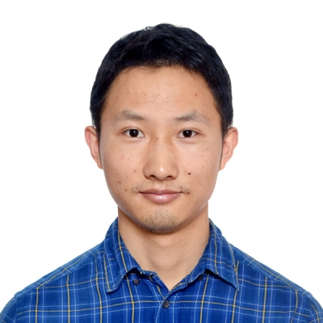
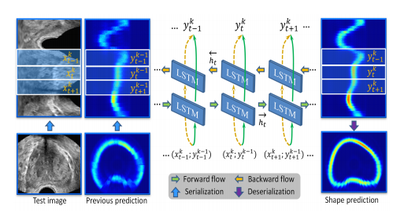

Xin YangPhD
Rm 1024, Ho Sin-Hang Engineering Building |
 |


Biography [CV]
I am currently a fourth year Ph.D. student in the Department of Computer Science and Engineering, The Chinese University of Hong Kong, supervised by Prof. Pheng-Ann Heng. Before that, I finished my master in School of Biomedical Engineering, Health Science Center, Shenzhen University, supervised by Prof. Dong Ni. During my master period, I was offered the chance to visit the IDEA Lab, UNC-Chapel Hill, and supervised by Prof. Dinggang Shen. I finished my undergraduate with top rank and National Scholarship in the Department of Biomedical Engineering, South-Central University for Nationalities.
My research interest includes medical image computing, intelligent ultrasound, cardiac image analysis and computer graphics.
News
- [07/2019] Three papers were accepted by MICCAI 2019 (two early accepted).
- [06/2019] Finish my Ph.D. defense on 11-June-2019. Thanks.
- [04/2019] Our work about attentative learning for prostate segmentation in 3D ultrasound was accepted by IEEE TMI.
- [02/2019] Our work about optic disc and cup segmentation in fundus images was accepted by IEEE TMI.
- [09/2018] Our teams from CUHK, Tencent YouTu and Shenzhen Univ. won the second and third prizes out of 27 competitors in 2018 Atrial Segmentation Challenge.
- [08/2018] Start my internship in Cardiovascular MR Center, Harvard BIDMC, supervised by Prof. Reza Nezafat.
- [07/2018] Our conference extension paper about 3D prenatal ultrasound segmentation was accepted by IEEE TMI.
- [05/2018] Three papers were early accepted by MICCAI 2018.
- [04/2018] The ACDC Challenge paper was accepted by IEEE TMI. Automated Cardiac Diagnosis Challenge (ACDC).
- [03/2018] I was offered with the scholarship Overseas Research Attachment Programme for PhD Students (ORAP) from the Engineering Department, CUHK.
- [07/2017] Our team won the second place in CT image segmentation section in MM-WHS 2017: Multi-Modality Whole Heart Segmentation Challenge.
- [05/2017] Two papers (One oral) were accepted to MICCAI 2017.
- [12/2016] We are keeping the first record on the MICCAI Grand Challenge: Prostate MR Image Segmentation 2012.
- [10/2016] Our team won the Whole-Heart and Great Vessel Segmentation Challenge.
Selected Publications | Google Scholar
| /*2019*/ | |
| Shujun Wang, Lequan Yu, Kang Li, Xin Yang, Chi-Wing Fu, Pheng-Ann Heng. "Boundary and Entropy-driven Adversarial Learning for Fundus Image Segmentation". MICCAI, 2019. | |
| Yi Wang, Haoran Dou, Xiaowei Hu, Lei Zhu, Xin Yang, Ming Xu, Jing Qin, Pheng-Ann Heng, Tianfu Wang, and Dong Ni. "Deep Attentive Features for Prostate Segmentation in 3D Transrectal Ultrasound". IEEE TMI, 2019.
[paper] |
|

|
Xiahai Zhuang, Lei Li, Christian Payer, Darko Stern, Martin Urschler, Mattias P. Heinrich, Julien Oster,
Chunliang Wang, Orjan Smedby, Cheng Bian, Xin Yang, Pheng-Ann Heng and et al. "Evaluation of Algorithms for Multi-Modality Whole Heart Segmentation: An Open-Access Grand Challenge". Arxiv, 2019.
[paper] |
| Shujun Wang, Lequan Yu, Xin Yang, Chi-Wing Fu, and Pheng-Ann Heng. "Patch-based Output Space Adversarial Learning for Joint Optic Disc and Cup Segmentation". IEEE TMI, 2019.
[paper] |
|
| /*2018*/ | |
| Xin Yang, Na Wang, Yi Wang, Xu Wang, Reza Nezafat, Dong Ni, and Pheng-Ann Heng. "Combating Uncertainty with Novel Losses for Automatic Left Atrium Segmentation". Atrial Segmentation Challenge in STACOM, 2018.
[paper] |
|

|
Cheng Bian, Xin Yang, Shen Zheng, Yu-An Liu, Reza Nezafat, Pheng-Ann Heng, and Yefeng Zheng. "Pyramid Network with Online Hard Example Mining for Accurate Left Atrium Segmentation". Atrial Segmentation Challenge in STACOM, 2018.
[paper] |

|
Xin Yang, Lequan Yu, Shengli Li, Huaxuan Wen, Dandan Luo, Cheng Bian, Jing Qin, Dong Ni, and Pheng-Ann Heng. "Towards Automated Semantic Segmentation in Prenatal Volumetric Ultrasound". IEEE TMI, 2018.
[paper] |
| Xin Yang, Haoran Dou, Ran Li, Xu Wang, Cheng Bian, Shengli Li, Dong Ni and Pheng-Ann Heng. "Generalizing Deep Models for Ultrasound Image Segmentation". MICCAI, 2018. | |
| Na Wang, Cheng Bian, Yi Wang, Min Xu, Chenchen Qin, Xin Yang, Tianfu Wang, Anhua Li, Dinggang Shen and Dong Ni. "Densely Deep Supervised Networks with Threshold Loss for Cancer Detection in Automated Breast Ultrasound". MICCAI, 2018.
[paper] |
|
| Yi Wang, Zijun Deng, Xiaowei Hu, Lei Zhu, Xin Yang, Xuemiao Xu, Pheng-Ann Heng and Dong Ni. "Deep Attentional Features for Prostate Segmentation in Ultrasound". MICCAI, 2018. | |
| Bernard, O., Lalande, A., Zotti, C., Cervenansky, F., Yang, X., Heng, P. A. and et al. "Deep Learning Techniques for Automatic MRI Cardiac Multi-structures Segmentation and Diagnosis: Is the Problem Solved?". IEEE TMI, 2018.
[paper] |
|

|
Xin Yang, Lequan Yu, Qi Dou, Jing Qin, and Pheng-Ann Heng. "Deep Convolutional Networks for Automated Volumetric Cardiovascular Image Segmentation: From a Design Perspective". Book Chapter:Cardiovascular Imaging and Image Analysis, 2018. [paper][code 1] [code 2] |
| /*2017*/ | |
| Xin Yang, Lequan Yu, Shengli Li, Xu Wang, Na Wang, Jing Qin, Dong Ni, Pheng-Ann Heng. "Towards Automatic Semantic Segmentation in Volumetric Ultrasound" Medical Image Computing and Computer Assisted Intervention (MICCAI), 2017.(Oral Presentation)
[paper][Project Homepage] [code] |
|

|
Lequan Yu, Jie-Zhi Cheng, Qi Dou, Xin Yang, Hao Chen, Jing Qin, Pheng-Ann Heng. "Automatic 3D Cardiovascular MR Segmentation with Densely-Connected Volumetric ConvNets" Medical Image Computing and Computer Assisted Intervention (MICCAI), 2017. |
| Xin Yang, Cheng Bian, Lequan Yu, Dong Ni, Pheng-Ann Heng. "Hybrid Loss Guided Convolutional Networks for Whole Heart Parsing" MICCAI Workshop on Multi-Modality Whole Heart Segmentation (MM-WHS), 2017 (Rank Second in CT segmentation). | |

|
Qi Dou, Lequan Yu, Hao Chen, Yueming Jin, Xin Yang, Jing Qin, Pheng-Ann Heng. "3D Deeply Supervised Network for Automated Segmentation of Volumetric Medical Images" Medical Image Analysis (MedIA), 2017. (The journal version of MICCAI paper) |
|  | Xin Yang, Lequan Yu, Lingyun Wu, Yi Wang, Dong Ni, Jing Qin, Pheng-Ann Heng. "Fine-grained Recurrent Neural Networks for Automatic Prostate Segmentation in Ultrasound Images" Thirty-First AAAI Conference on Artificial Intelligence (AAAI), 2017.
[paper] |
| Lequan Yu, Xin Yang, Hao Chen, Jing Qin, Pheng-Ann Heng. "Volumetric ConvNets with Mixed Residual Connections for Automated Prostate Segmentation from 3D MR Images" Thirty-First AAAI Conference on Artificial Intelligence (AAAI), 2017.
[code] [paper] [Challenge website] |
|

|
Lingyun Wu, Xin Yang, Shengli Li, Tianfu Wang, Pheng-Ann Heng, Dong Ni. "Cascaded Fully Convolutional Networks for Automatic Prenatal Ultrasound Image Segmentation" International Symposium on Biomedical Imaging (ISBI), 2017. [paper] |
| /*2016*/ | |

|
Lequan Yu, Xin Yang, Jing Qin, Pheng-Ann Heng. "3D FractalNet: Dense Volumetric Segmentation for Cardiovascular MRI Volumes" MICCAI Workshop on Whole-Heart and Great Vessel Segmentation from 3D Cardiovascular MRI in Congenital Heart Disease (HVSMR), 2016 (Top Rank in Challenge).
[code] [paper][Challenge website] |
| /*2015*/ | |
| Hao Chen, Dong Ni, Jing Qin, Shengli Li, Xin Yang, Tianfu Wang, Pheng-Ann Heng. "Standard Plane Localization in Fetal Ultrasound via Domain Transferred Deep Neural Networks" IEEE Journal of Biomedical and Health Informatics (IEEE JBHI), 2015. [paper] | |
| /*2014*/ | |

|
Dong Ni, Xin Yang, Xin Chen, Chien-Ting Chin, Siping Chen, Pheng-Ann Heng, Shengli Li, Jing Qin, Tianfu Wang. "Standard Plane Localization in Ultrasound by Radial Component Model and Selective Search" Ultrasound in Medicine & Biology (UMB), 2014. [paper] [Demo Video] |
Honors & Awards
| 2018, Overseas Research Attachment Programme for PhD Students (ORAP), CUHK, Hong Kong |
| 2017, AAAI Scholarship, San Fransisco, USA |
| 2014, Tencent Founder Innovative Scholarship, Tencent, China |
| 2010, National Scholarship, China |
Professional Activities
| IEEE Student | AAAI Student |
| Medical Image Computing and Computer Assisted Intervention (MICCAI) | IEEE Journal of Biomedical and Health Informatics (IEEE JBHI) | IEEE Transactions on Medical Imaging (IEEE TMI) | Computer Methods and Programs in Biomedicine (CMPB) |
Teaching
| 2017-2018 | Spring | ENGG1110 Problem Solving By Programming | 2017-2018 | Fall | CSCI3260 Principles of Computer Graphics | 2016-2017 | Spring | ENGG1410 Linear Algebra and Vector Calculus for Engineers | 2016-2017 | Fall | CSCI3260 Principles of Computer Graphics | 2015-2016 | Spring | CSCI3170 Introduction to Database Systems | 2015-2016 | Fall | CSCI3160 Design and Analysis of Algorithms |